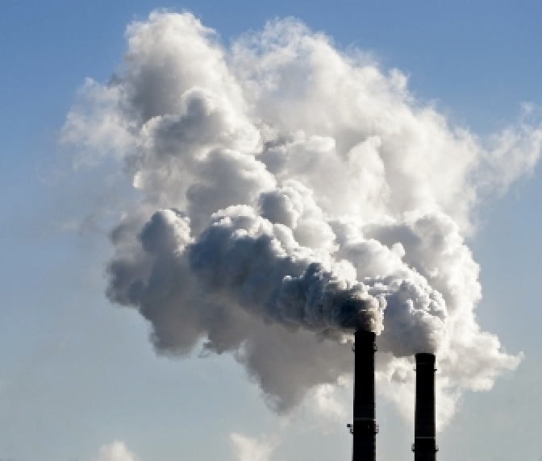
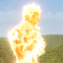

Un grand pouvoir implique de grands rejets de CO2

Les capacités de la torche humaine sont incroyables, mais ont de lourdes conséquences sur l’envirronnement...
Il s'enflamme comment
Vous venez de connaitre l’histoire de la Torche Humaine et de ses pouvoirs avec le premier article. Mais vous êtes-vous demandé comment pouvait -il s’enflammer ? Et quels en étaient les conséquences ? Parce que oui, il est évident que brûler son corps ne se fait pas naturellement et encore moins sans conséquence.
Trop de carbone
Il serait donc temps de vous présenter l’envers du décor de ce super-héros. Et pour ce faire, un petit point scientifique s’impose. Il faut savoir que notre corps est constitué à environ 20% de carbone. Mais lorsque celui de Johnny a été traversée par les rayons cosmiques, cette quantité a explosé. Bien que ces rayons possèdent peu de carbone, Johnny en a reçu une quantité suffisante pour posséder un corps inhumain avec un taux de carbone élevé ! Mais que se passe t’il quand notre super héros prend feu ?
Conséquences sur notre envoronnement
Car effectivement brûler son corps lui permet de sauver des vies, mais pas de sauver notre planète, loin de la. Il va utiliser le carbone qu’il possède en grande quantité pour former un plasma autour de lui puis l’enflammer. Le plasma qui est donc composé en grande quantité de carbone va brûler et rejeter du dioxyde de carbone dans l’air.
“De plus, la combustion de ces composés riche en carbone produit du dioxyde de carbone, le principal gaz à effet de serre ”3 minutes pour comprendre les 50 notions fondamentales dans le domaine de l'énergie
Le dioxyde de carbone qui n’est autre que le principal gaz à effet de serre. Et cela pose un réel problème pour notre environnement. En effet l’effet de serre est un phénomène influant sur le climat et la température de notre planète. Plus l’effet de serre est important, plus la température monte, entrainant alors la montée des eaux, la disparition de nombreuses espèces…
Le vrai responsable
Mais le principal responsable des émissions de dioxyde de carbone n’est pas la Torche Humaine. C’est la production d’électricité issu d’énergie fossile qui rejette le plus de gaz à effet de serre. En effet près de 87% d’émissions de carbone attribuable à l’homme sont issu de la combustion de comburant fossiles. Cette énergie fossile est celle utilisé pour alimenter principalement les voitures, les avions et les centrales électriques.
Les usines à charbon plus principalement sont celles les plus polluantes. Pour 1 tonnes de charbon brulé, il est produit 2,5 tonnes de dioxyde de carbone, ce qui est équivalent à environ 12 500 km en voiture. Le charbon est donc responsable a lui seul de 43% des émissions globale de dioxyde de carbone.
Si vous voulez approfondir le problème des énergies, je vous conseil d'aller lire le livre "3 minutes pour comprendre les 50 notions fondamentales dans le domaine de l ’énergie’’.
Alors je vous recommande d’aller voir les livres de la même collection :